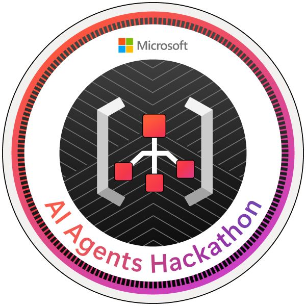

ServiceNow – Flow Designer & IntegrationHub
Szkolenie obejmowało automatyzację procesów w ServiceNow z wykorzystaniem Flow Designera i IntegrationHub. Poznałem także podstawy tworzenia aplikacji, skryptów oraz analizę przyczyn źródłowych zgodnie z ITIL.
- Automatyzacja bez kodu (no-code/low-code)
- Tworzenie prostych flow dla incydentów i zgłoszeń
- Obsługa IntegrationHub i konektorów zewnętrznych
- Przygotowanie do certyfikatu CSA (Certified System Administrator)
Microsoft Hackathon 2025
Wziąłem udział w wewnętrznym hackatonie organizowanym przez Microsoft, skierowanym do uczestników na poziomie średniozaawansowanym. Celem wydarzenia było stworzenie działającej aplikacji automatyzującej codzienne procesy w środowisku IT.
- Temat: automatyzacja i wykorzystanie AI w codziennej pracy zespołów
- Zakres: Python, GUI (customtkinter), integracje z Microsoft Teams i Outlook
- Elementy: analiza potrzeb użytkowników, testowanie, prezentacja funkcjonalności
- Poziom: średniozaawansowany (zarówno w kodowaniu, jak i projektowaniu rozwiązań)
Udział w hackatonie pozwolił mi sprawdzić się w warunkach projektowych, w których liczy się szybkość działania, pomysłowość i dopasowanie do realnych potrzeb zespołu.
Podsumowanie
To było naprawdę dynamiczne półrocze – pełne nauki, testowania nowych pomysłów i wdrażania innowacyjnych narzędzi. Z niecierpliwością czekam na drugą połowę roku, bo zapowiada się równie intensywnie i rozwojowo.